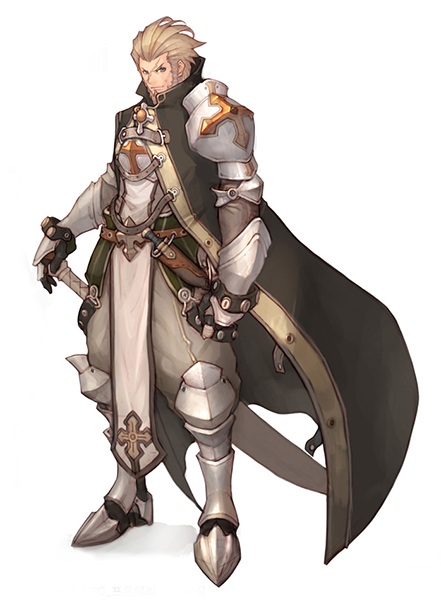
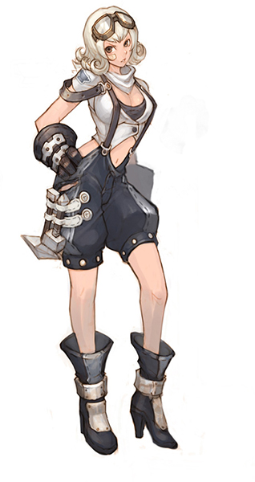
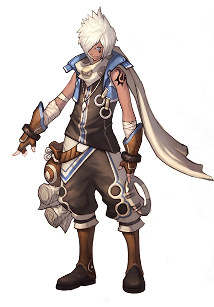

画像にリンクがはってあるものは、クリックすると別窓で大きめサイズが表示されます。
 |
 |
| カプラ職員（kafra）「シェルフィー」 | NPC |
|  |  |
| NPC | NPC |
back
(c) Gravity Co., Ltd. & Lee MyoungJin(studio DTDS). All rights reserved.
(c) GungHo Online Entertainment, Inc. All Rights Reserved.
当コンテンツの再利用（再転載・配布など）は、禁止しています。